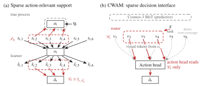

CausalWAM: Learning the Causes of Actions in World Action Models

Stacking two cubes depends on their poses and the gripper state. Predicting the camera image also requires the tablecloth and background. A shared world model must represent both—but fitting demonstrations alone does not ensure that its action pathway separates them.
TL;DRWe identify the action interface through a sparsity principle: under the stated conditions, limiting state-to-action dependencies recovers the action-relevant latent block and its dependency pattern. CWAM brings this principle to a pretrained world action model through a sparse routing path, improving aggregate closed-loop success while retaining the world-modeling objective.
The setup
The world. At each demonstration step, a latent state generates the observation and the action. The observation map is invertible, while only an action-relevant subset of the state enters the action mechanism.
The learner. A flexible encoder can mix relevant and nuisance coordinates while preserving the demonstrated behavior. Consequently, observational fit does not by itself reveal which latent coordinates the action mechanism should read.
The identification target. We ask for the action-relevant block up to an invertible transformation and its state-to-action dependency pattern up to a permutation. Prediction remains free to use the full state.
From observational fit to an identifiable action interface
Why fitting alone is insufficient
Under the proposition's nondegeneracy conditions, an estimated mechanism that fits the demonstrations must use at least as many latent dependencies per action dimension as the true mechanism. This lower bound permits over-coverage: additional coordinates may enter the action pathway.
The sparsity principle
Require the estimated state-to-action mechanism to have no more dependencies in total than the true one. Together with the lower bound, this turns support inclusion into equality.
Theorem 1 · Recover the action structure
The estimated mechanism has the same latent-to-action support as the true mechanism, up to a common permutation of latent coordinates.
Theorem 2 · Separate the relevant state
The compact state read by the action mechanism is an invertible function of the true action-relevant block alone.
What this means. Recovery is at the block level, rather than a guarantee that every learned coordinate equals one physical factor. It allows dependence between relevant and nuisance variables and does not use cross-time structure.
Conditions behind these guarantees
The results assume smooth invertible observation/state reparameterizations, a full-support state distribution, a pathwise coupling with shared action noise, Jacobian span and support-inclusion conditions, and the support bound above. Distribution matching alone does not supply the pathwise identity.
The span condition is a separate assumption on the action mechanism. Smoothness and a continuous state density alone do not guarantee it.
From the principle to a world action model
Keep the predictive model. CWAM starts from Cosmos 3 Nano and retains joint rectified-flow training of future video and action chunks.
Add a focused action path. After the shared tower, action queries route over clean visual and task tokens. Relation-aware attention supplies a gated residual to the action head.
Encourage a concentrated readout. A top-k mass penalty regularizes the router. The total objective adds this term to the unchanged world action loss:
The token-level penalty is a practical surrogate for the theorem's mechanism-support constraint. The default implementation retains its dense action path; the theorem is not a proof of identifiability for this full neural policy.
Empirical results
Does the compact state recover the relevant block?
A synthetic process exposes the ground-truth latent factors. With four selected coordinates, CWAM with sparsity achieves relevant-factor probe R2 close to the 20-dimensional dense readout. The comparisons below report the paper's five-seed results.
| Readout | Dimensions | Relevant R2 | Nuisance excess |
|---|---|---|---|
| Dense | 20 | 0.9961 ± 0.0015 | 0.646 ± 0.115 |
| Random matched | 4 | 0.5493 ± 0.2964 | 0.392 ± 0.144 |
| CWAM without sparsity | 4 | 0.9876 ± 0.0164 | −0.008 ± 0.006 |
| Standard MLP VAE | 4 | 0.9440 ± 0.0448 | 0.316 ± 0.186 |
| CWAM with sparsity | 4 | 0.9957 ± 0.0014 | 0.039 ± 0.093 |
Linear probes assess decodability in this synthetic setting. They are diagnostic measurements, not a proof of invertibility or nuisance separation under arbitrary nonlinear transformations.
Does the routing path help a robot act?
On learned visual representations, the true latent factors are unavailable. We therefore test the practical pathway through closed-loop success on RoboCasa365, LIBERO and a real Franka robot. The two demos below show the simulated and physical manipulation settings.
(a) Real robot
Red-on-green cube stacking
(b) RoboCasa365
Manipulation in simulation
Closed-loop success against the matched baseline
Baseline and CWAM use the matched post-training recipe; CWAM adds the router and its sparsity loss. The interactive charts report task and suite success rates.
100 episodes per task · 1,700 episodes per policy
CWAM improves 13 of 17 individual tasks. Family values are unweighted task means.
All RoboCasa365 task results
| Task | Cosmos 3 | CWAM | Change |
|---|
Which tokens are kept matters
On the four RoboCasa365 tasks with the highest CWAM success, keeping only routed visual tokens retains more success than keeping the same number of randomly selected tokens.
BibTeX
@article{cheng2026causalwam,
title = {{CausalWAM}: Learning the Causes of Actions
in World Action Models},
author = {Cheng, Juntao and Tang, Jinzhou and Feng, Fan
and Christensen, Henrik I. and Zheng, Yujia},
journal = {arXiv preprint arXiv:2610.42096},
year = {2026},
url = {https://arxiv.org/abs/2610.42096}
}